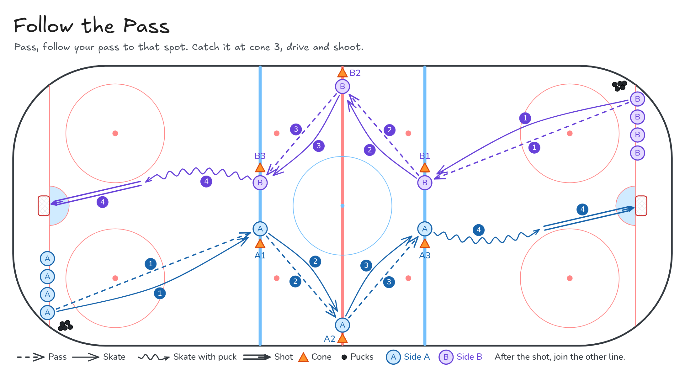

Follow the Pass
Pass, follow your pass to that spot. Catch it at cone 3, drive and shoot.
- Full ice
- Passing
- Shooting
Watch
Diagram

Coaching points
- Full ice and two-sided. Both ends run at the same time.
- The front player starts at the boards and makes the first pass.
- Three cones per side: near blue line at centre, boards at the red line, far blue line at centre.
- Catch the puck at cone 3, drive the net, and shoot. Then join the line at the other end.
How it runs
- Set a line along each goal line. The first player in each line starts on the boards with a puck.
- Place three cones on each side of the rink: centre ice at the near blue line, on the boards at the red line, and centre ice at the far blue line.
- The front player passes to the next player in line, then follows that pass along the cones.
- Each player who receives the puck passes it on and follows their own pass. Keep the puck and the skaters moving up the ice.
- The player who catches the puck at cone 3 (far blue line, centre) drives the net and shoots.
- After the shot, that player joins the line at the far end. The same pattern is already coming back the other way.